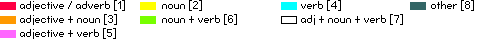

 base26four-letter words have a special status in the english language and culture. counting in at over 1650 words, in most cases the term is only used to address the more crude, sexual subset and its use has been effectively eliminated from the language of "good" society, mainly due to its negative connotations with lack of education, etiquette and status. in a way, the use of those four-letter words reflects the schizoid prudence and class system in english speaking societies, still evident today. this small project is an attempt to give a spacial overview of the entirety of this part of english language heritage, as well as to explore and visualize relations between all those words. in order to do so, the words are first re-interpreted & transformed in 2 steps: step 1) each letter of the word is considered an unique number in the base26 domain, such that a=0*26n, b=1*26n... z=25*26n and where n is the position of the letter in the word, with n=3 for the 1st letter and decreasing until n=0 for the last letter. step 2) stems from the idea of re-interpreting a number as coordinate: 4D in this case, with 3 letters specifying XYZ coordinates plus another for time as the 4th dimension. so the word "BASE" would define a unique 4D point at time=B, x=A, z=S, y=E. note that for purely cosmetic/representational reasons Y and Z are reversed in order. based on those assumptions, it is now possible to map all four-letter words to unique points and compute a visualization. there're 2 extra dimensions of information used here, as the graph also incorporates types of words and the frequency of occurence of letter combinations. in the visualization the nodes representing the words are colour coded based on the word being either an adjective/adverb, noun, verb, other (preposition, pronoun etc.) or combinations thereof. use the filter buttons at the bottom of the applet to include/exclude words from the dataset. the wireframe surface surrounding the nodes represents the frequency of occurence of nodes across all words. eg. the 3d point described by the letters "ear" occurs in all those words: bear, dear, fear, gear, hear, near, pear etc. the higher the frequency, the bigger the surface's radius around that node. because computing this surface is quite CPU intensive, you can adjust the resolution, as well as its looseness via the plus/minus buttons in the top right corner. the words used here have been manually extracted from the Oxford Paperback Dictionary and do not represent an all-inclusive, complete dataset, although i believe to have covered at least 95%. in cases where known, i've also tried to incorporate american spelling. please send any error reports to info-at-toxi.co.uk. thanks!
|